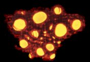

|
Track 1:
The Real Thing
J. Young
Produced by Midnight Oil. Recorded by Paul McKercher at Festival Studios, Sydney. Assisted by matt Lovell. Mixed by Magoo at Studios 301, Sydney. Assisted by Anton Hagop.
Track 2:
Say Your Prayers
Moginie
Produced by Midnight Oil and Daniel Denholm. Recorded by Daniel Denholm at Festival Studios, Sydney. Assisted by Matt Lovell. Additional engineering Brent Clark. Mixed by Daniel Denholm and Midnight Oil at Alberts Studios, Sydney. Assisted by Fabian Weston.
Track 3:
Spirit Of The Age
Moginie/Garrett
Produced by Midnight Oil. Recorded by Paul McKercher at Festival Studios, Sydney. Assisted by Matt Lovell. Mixed by Paul McKercher and Midnight Oil at Alberts Studios, Sydney. Assisted by Fabian Weston.
Track 4:
Feeding Frenzy
Moginie/Garrett
Recorded by Keith Walker at The Metro Theatre, Sydney (October 1994) on the Jands Mobile. Mixed by Paul McKercher at Alberts Studios, Sydney. Assisted by Fabian Weston.
Track 5:
Tell Me The Truth
Moginie/Garrett
Recorded by Keith Walker at The Metro Theatre, Sydney (October 1994) on the Jands Mobile. Mixed by Paul McKercher at Alberts Studios, Sydney. Assisted by Fabian Weston.
Track 6:
The Dead Heart
Hirst/Moginie/Garrett
Recorded by Keith Walker at The Metro Theatre, Sydney (October 1994) on the Jands Mobile. Mixed by Paul McKercher at Alberts Studios, Sydney. Assisted by Fabian Weston.
Track 7:
Tin Legs and Tin Mines
Rotsey/Moginie/Garrett/Gifford
Recorded by Keith Walker at The Metro Theatre, Sydney (October 1994) on the Jands Mobile. Mixed by Paul McKercher at Alberts Studios, Sydney. Assisted by Fabian Weston.
|
Track 8:
Short Memory
Garrett/Hirst/Moginie
Recorded by Keith Walker at The Metro Theatre, Sydney (October 1994) on the Jands Mobile. Mixed by Paul McKercher at Alberts Studios, Sydney. Assisted by Fabian Weston.
Track 9:
In The Valley
Moginie/Garrett/Hirst
Recorded by Jay Vicari at Sony Studios NYC (April 1993) for MTV Unplugged. Assisted by Mike Fisher. Mixed by Nick Launay at the Townhouse, Shepherds Bush, UK (April 1993). Assisted by Pete.
Track 10:
Blue Sky Mine
Rotsey/Hirst/Moginie/Garrett/Hillman
Recorded by Keith Walker at The Metro Theatre, Sydney (October 1994) on the Jands Mobile. Mixed by Paul McKercher at Alberts Studios, Sydney. Assisted by Fabian Weston.
Track 11:
US Forces
Moginie/Garrett
Recorded by Keith Walker at The Metro Theatre, Sydney (October 1994) on the Jands Mobile. Mixed by Paul McKercher at Alberts Studios, Sydney. Assisted by Fabian Weston.
Track 12:
Warakurna
Moginie
Recorded by Jay Vicari at Sony Studios NYC (April 1993) for MTV Unplugged. Assisted by Mike Fisher. Mixed by Nick Launay at the Townhouse, Shepherds Bush, UK (April 1993). Assisted by Pete.
Track 13:
Truganini
Hirst/Moginie
Recorded by Jay Vicari at Sony Studios NYC (April 1993) for MTV Unplugged. Assisted by Mike Fisher. Mixed by Nick Launay at the Townhouse, Shepherds Bush, UK (April 1993). Assisted by Pete.
Track 13:
The Last of the Diggers
Hirst
Produced by Midnight Oil. Recorded by Paul McKercher at Festival Studios, Sydney. Assisted by Matt Lovell. Mixed by Paul McKercher and Midnight Oil at Alberts Studios, Sydney. Assisted by Fabian Weston.
|
|
Midnight Oil is:
Martin Rotsey [guitar].
Rob Hirst [drums, singing and percussion].
Bones Hillman [bass and singing].
Peter Garrett [singing and harmonica].
Jim Moginie [guitar, singing, organ, autoharp and harmonium].

Additional Musicians:
Say Your Prayers - Stewart Kirwan [trumpet],
Andrew Bickers [tenor sax], Anthony Kable [trombone].
In The Valley, Warakurna, Truganini - Chris Abrahams
[piano and organ], Basheri [percussion].
Feeding Frenzy, Tell Me The Truth, The Dead Heart,
Tin Legs and Tin Mines, Short Memory,
Blue Sky Mine, US Forces - Chris Abrahams [piano and organ],
Sunil de Silva [percussion].
The Dead Heart - Charlie McMahon [didgeridoo].
Management Gary Morris.
Office Arlene Brookes, Craig Allen. Publicity jones PR...
Thanks to our production crew for a job well done: Colin Ellis,
Nick Elvin, Kevin Farrant, Frank Gormley, Shane Loadsman, Michael
Mildren, Willie MacInnes, Doc Nelson, John Vasey, Barry Woods.
Special thanks to our families, friends, fans and supporters.
Design & Art Rockin' Doodles.
|